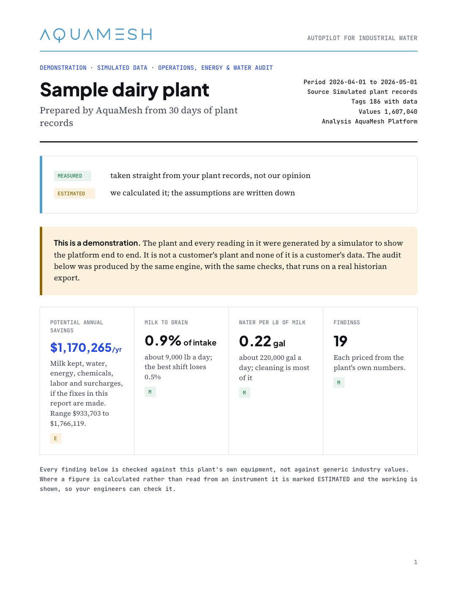

Case study · Dairy processing
$1.17M a year, found in a dairy plant's own records.
A worked example on a modelled dairy plant. Thirty days of plant records — 186 tags, 1.6 million values — went through the same engine and checks that read a real historian export. It found 19 losses, each priced line by line from the plant's own numbers, with the fix written next to it.
- Found a year
- $1.17M
- Range
- $0.93M to $1.77M
- Milk to drain
- 0.9% of intake, best shift 0.5%
- Findings
- 19, each with a fix
A modelled plant, not a customer. Every reading was generated by a simulator to show the platform end to end. The audit is the engine's own output, and it says so on every page.
Where the money is
Most of it leaves at changeovers and in cleaning.
The ten largest findings, straight from the audit. Green is measured from the plant's records; amber is estimated, with the working shown.

The best shift is the benchmark. Milk to drain runs 0.9% of intake on average and 0.5% on the best shift — same lines, same products. The target is a level this plant already reaches.
This week
Six fixes, no capital.
| Finding | What to do | $ / yr |
|---|---|---|
| Milk to drain at changeovers | Cut the product-to-water interface on conductivity or turbidity instead of a timer. | $270,000 |
| Rinses run 40% longer than needed | End each rinse on return conductivity, with today's time as the maximum. | $129,600 |
| Caustic at worst-day strength | Set strength by circuit and soil; keep 1.8% for heavy runs only. | $108,000 |
| Separators desludge on a timer | Trigger on bowl solids or backpressure, with the timer as backstop. | $91,125 |
| Clean condensate to drain | Send condensate that passes a conductivity check to the pre-rinse tank. | $86,400 |
| Cooling tower at 2.6 cycles | Raise the cycles target toward 5 once the scaling limit is confirmed. | $74,650 |
What instrumentation adds
Sensing where the plant is blind, paid for by phase one.
Everything above came from data the plant already collects. The instrumentation package costs about $106,000 — roughly 9% of the savings already identified — and turns the estimated findings into measured, continuous ones.
| Instrument | Capital | Value it secures, $ / yr |
|---|---|---|
| AquaSpectra™ on the drain lines: milk solids and BOD, every minute | $25,000 | $310,500 |
| Conductivity on each cleaning return: when the rinse is clean | $12,000 | $237,600 |
| AquaSpectra™ on condensate: milk carryover before reuse | $30,000 | $155,217 |
| AquaSpectra™ at the outfall: BOD, fats and pH, every minute | $25,000 | $96,180 |
| Solids signal on each separator: when to desludge | $9,000 | $91,125 |
Most of this value is already counted in the findings above; the instruments secure it rather than add to it. Capital figures are order-of-magnitude.
The audit
The full report, nine pages.
The format a plant gets back from its own historian export: where the money is, each finding with its evidence and fix, what to do this week, and what instrumentation would add.
Download the audit (PDF)
What is your plant losing?
Send a historian export. You get an audit like this one, priced from your own numbers.
Example case study on a modelled plant. Figures come from simulated records, not a customer’s results.